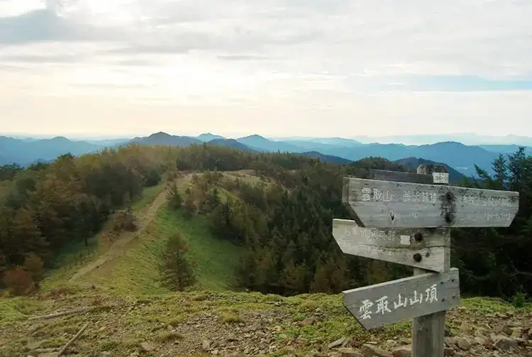

Okutama, Tokyo: things to do, food and stays
Okutama · Tokyo
Okutama
Highlighted on the Tokyo map.

Sights
Dining
Nonkiya
のんきや

Noodle restaurant in Okutama, Tokyo.
VERTERE Okutama Taproom

Cafe in Okutama, Tokyo.
Kamameshi Nakai
釜めし なかい

Noodle restaurant in Okutama, Tokyo.
Dashimaki Tamago Senmonten Ranwei
だしまき玉子専門店 卵道

Japanese restaurant in Okutama, Tokyo.
Mori no Naka no Oniku Restaurant Earth Garden Reservation
森の中のお肉レストラン アースガーデン

Meat restaurant in Okutama, Tokyo.
Tanzaburo
丹三郎

Noodle restaurant in Okutama, Tokyo.
Dashimaki Tamago Senmonten Ranwei TAMA korekushon
だしまき玉子専門店 卵道 TAMAコレクション

Japanese restaurant in Okutama, Tokyo.
Hatonosu Kamameshi
鳩の巣釜めし

Japanese restaurant in Okutama, Tokyo.
Soba Dokoro Hatomi
そば処 鳩美

Noodle restaurant in Okutama, Tokyo.
Chiwaki
ちわき

Japanese restaurant in Okutama, Tokyo.
Katakuri no Hana
カタクリの花

Noodle restaurant in Okutama, Tokyo.
Kikori
KIKORI CAFE TOKYO

Cafe in Okutama, Tokyo.
Okutama Seiryu Chuka Soba Mitsusugi
奥多摩清流中華そば 三つ杉

Noodle restaurant in Okutama, Tokyo.
Mountain Panya Forest Dance
山のぱ～ん屋 森のダンス

Sweets and bakery shop in Okutama, Tokyo.
Port Okutama
ポートおくたま

Cafe in Okutama, Tokyo.
Zekkei Cafe Poppo
絶景カフェ ぽっぽ

Cafe in Okutama, Tokyo.
Jinya
陣屋

Noodle restaurant in Okutama, Tokyo.
Okutama no Daidokoro
奥多摩の台所

Restaurant in Okutama, Tokyo.
Okutama Riverside Cafe awa
奥多摩リバーサイドカフェ awa

Cafe in Okutama, Tokyo.
Yamabato
山鳩

Cafe in Okutama, Tokyo.
Gotta coffee
ガタコーヒー

Cafe in Okutama, Tokyo.
Moegi no Yu
もえぎの湯

Japanese restaurant in Okutama, Tokyo.
Tokiro Reservation
時帰路

European restaurant in Okutama, Tokyo.
Okutama no Kaze Hatonosu So
奥多摩の風 はとのす荘

Restaurant in Okutama, Tokyo.
Tenmasu
天益

Chinese or Asian restaurant in Okutama, Tokyo.
Koumi Dou
弘美堂

Sweets and bakery shop in Okutama, Tokyo.
Shibaraku Tei Okutama ten
暫亭 奥多摩店

Meat restaurant in Okutama, Tokyo.
Gohan cafe Yamase
ごはんcafe やませみ

Cafe in Okutama, Tokyo.
Isshintei
一心亭

Noodle restaurant in Okutama, Tokyo.
Drop Blue
ドラポーブルー

Cafe in Okutama, Tokyo.
Shokusai Kitchen Mayfly
食彩キッチン メイフライ

Cafe in Okutama, Tokyo.
Tamafuku
玉福

Japanese restaurant in Okutama, Tokyo.
Wasabi Shokudo
わさび食堂

Japanese restaurant in Okutama, Tokyo.
Nippara Shonyudo Shop
日原鍾乳洞 売店

Noodle restaurant in Okutama, Tokyo.
Inshoku Dokoro Yanagi Koji
飲食処 ヤナギコージ

Izakaya or bar in Okutama, Tokyo.
Harashima Shokudo
はらしま食堂

Noodle restaurant in Okutama, Tokyo.